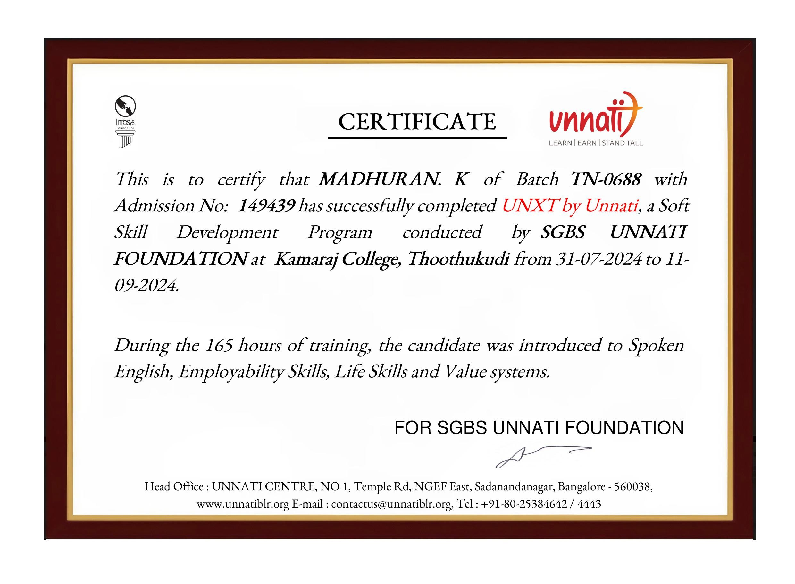
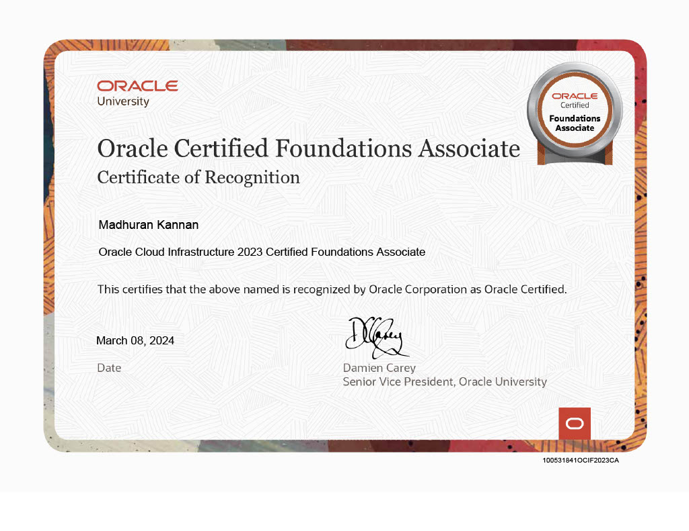
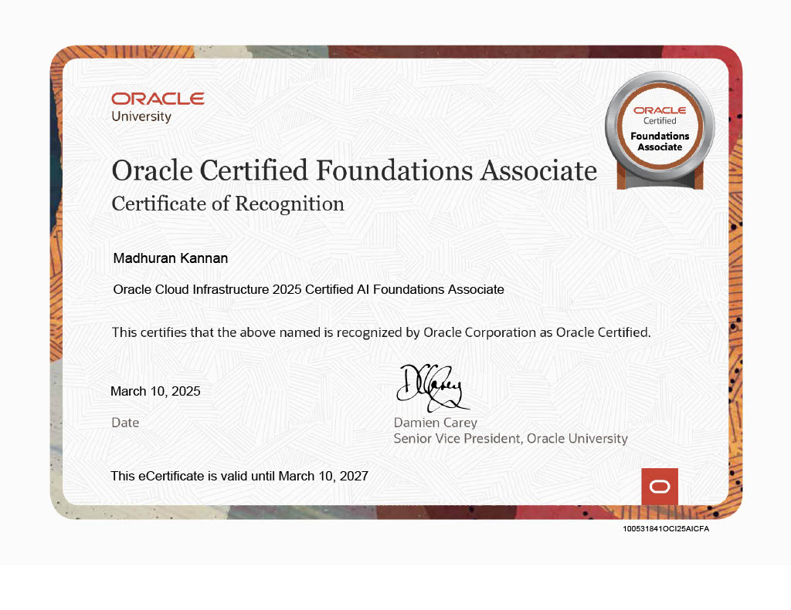

My Certificate Gallery

AWS Cloud, DevOps,Terreform, CCNA, Linux, Python– 2025

Unxt Udhyogam – Soft Skills Program (Infosys Sponsored)

Oracle Cloud Infrastructure – 2024

Oracle Cloud Infrastructure – 2025